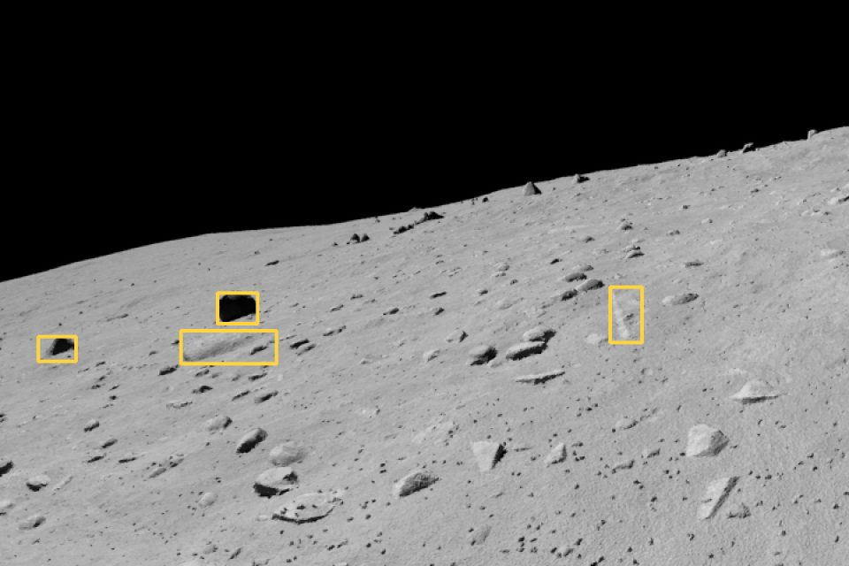
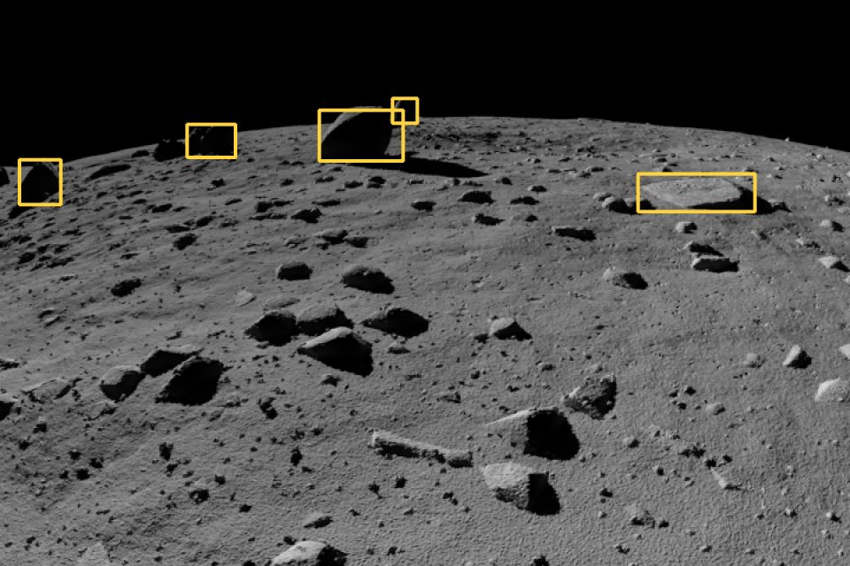
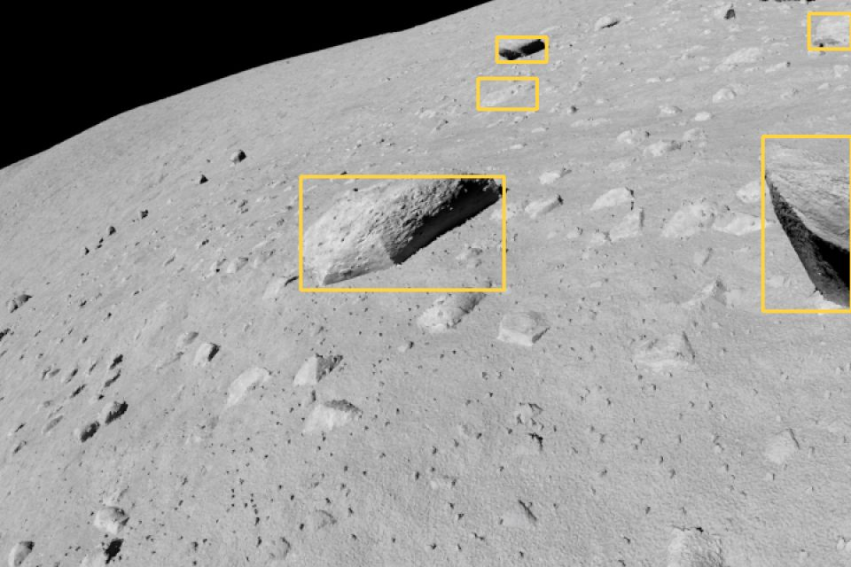
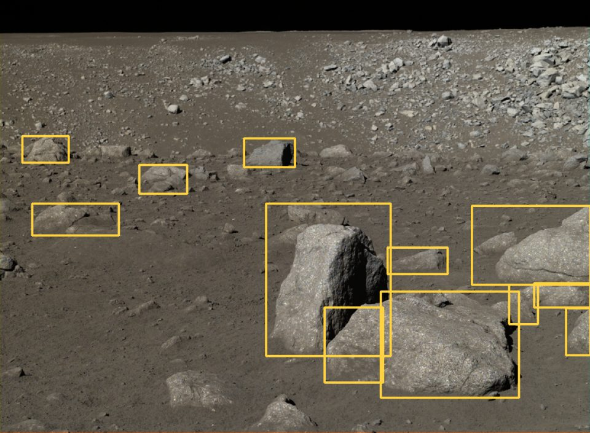
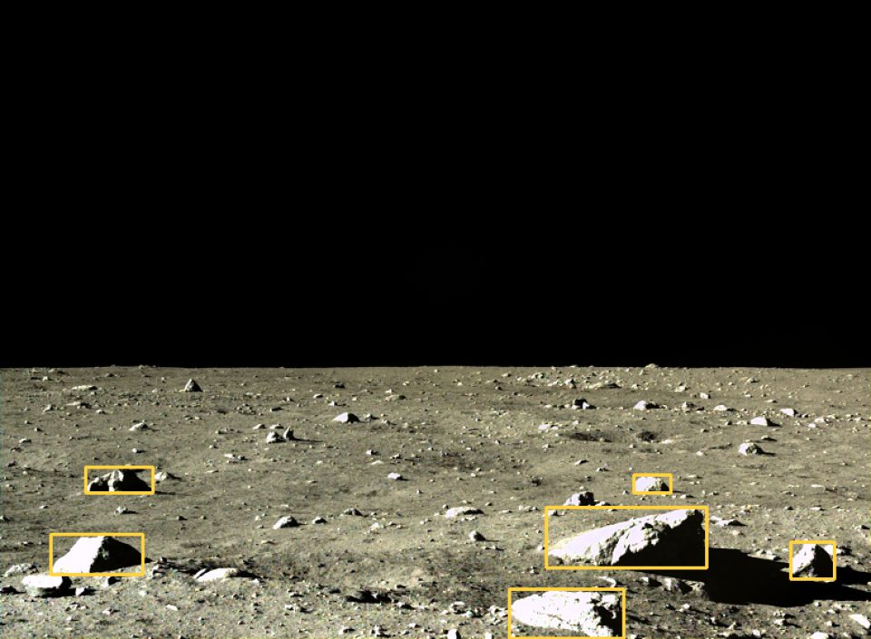
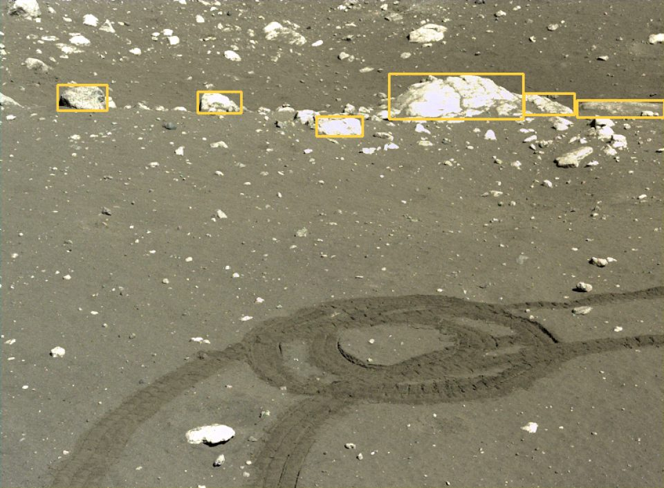
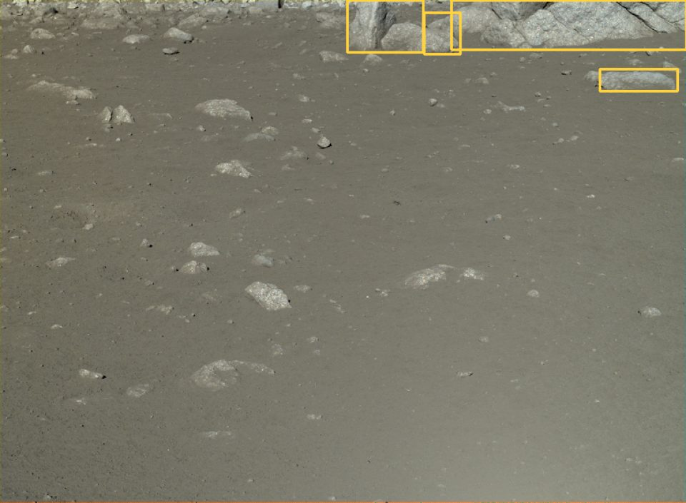
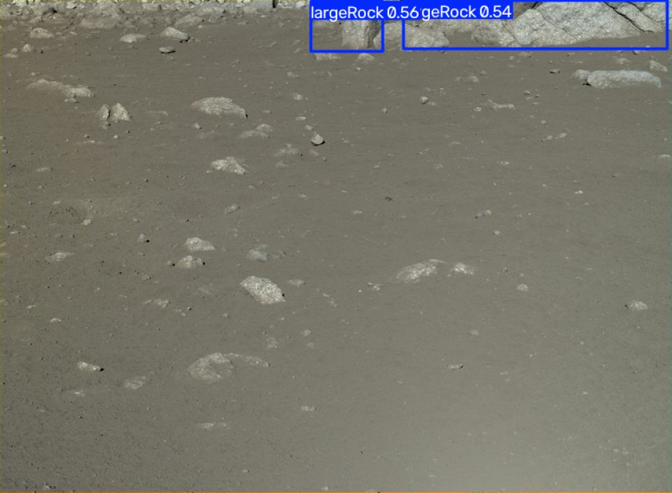

Abstract. Autonomous rovers need to recognize large rocks that could damage their wheels, but labeled images of the real lunar surface are scarce, so detectors are usually trained on rendered scenes. We fine-tune YOLOv8 on 8,049 rendered scenes from the Artificial Lunar Landscape Dataset and evaluate it on 36 held-out real lunar photographs. Trained on renders alone, the model reaches — mAP@0.5 on real photos. We then test four augmentations meant to make renders look more like real photos. The best configuration (—) reaches — mAP@0.5, at — ms per image.
1. Problem
NASA's Curiosity rover damaged its wheels soon after landing on Mars in 2012, which limited where it could drive. Rovers sent to the Moon and beyond will face similar terrain, and the communication delay with Earth means they can't wait for an operator to flag every hazard. They need to spot large, sharp rocks in their own camera images, even though lunar scenes combine harsh sunlight, deep shadow and almost no color variation.
Training such a detector requires labeled images. Real labeled lunar images are hard to come by, so models are usually trained on rendered scenes instead, and lose accuracy when they meet real photographs. We measure how large that loss is and test which augmentations reduce it.
2. Method
We use YOLOv8 from the Ultralytics library, fine-tuned from COCO-pretrained weights. Model size, number of epochs, image size and random seed are held fixed across every run, so the augmentation is the only thing that changes. Table 1 lists each stage of the pipeline and who wrote it.
| Stage | What it does | Code |
|---|---|---|
| Label conversion | Converts the dataset's bounding boxes to normalized YOLO format | ours |
| Data split | Splits renders into training and validation sets; all real photos are held out for testing | ours |
| Augmentation | Applies the transformations described below to the rendered images | ours |
| Training | YOLOv8 architecture and training loop | Ultralytics |
| Evaluation | mAP@0.5, mAP@0.5:0.95 and inference time on the real test photos | ours |
| Visualization | Tables, charts and detection comparisons | ours |
Table 1. Pipeline stages.
Data
Training uses only rendered scenes from the Artificial Lunar Landscape Dataset. The 36 real lunar photographs are held out for testing and never seen during training. Figure 1 shows a few examples of each. The renders are sharp and free of noise, while the real photographs are softer and have a brown tint.
Rendered training images



Real test photographs



Augmentations
Each augmentation is tested alone and in combination with the others:
- Contrast and exposure shifts imitate the very high dynamic range of sunlit lunar terrain.
- Gaussian blur imitates optical softness and slight motion blur from a real camera.
- Sensor noise adds the grain that rendered images lack.
- Directional lighting adds gradients and shadows from a low sun angle.
3. Results
All models are trained on rendered scenes only and evaluated on the same held-out real photographs. The gap column is real-photo mAP@0.5 minus validation mAP@0.5 on renders; values closer to zero mean the model transfers better.
| Configuration | Val AP50 | Real AP50 | Real AP50:95 | Gap | ms |
|---|
Table 2. Detection results. AP50 is mAP at IoU 0.5; AP50:95 is mAP averaged over IoU 0.5 to 0.95; ms is inference time per image. The best configuration on real photos is shaded.

Labeled large rocks
Blur model detections4. Demo
You can try the trained model on your own lunar or Mars terrain images below. It runs on a free Hugging Face Space, so the first request after a quiet period can take about 30 seconds.
Citation
If you use this work, please cite it as:
@misc{zentner2026roverhazard,
title = {Hazard Rock Detection for Rovers Using Synthetic Training Data},
author = {Zentner, Sky},
year = {2026},
url = {https://github.com/thedroppedcroisssantttt/rover-navigation-hazard-detection},
note = {Project page: https://thedroppedcroisssantttt.github.io/rover-navigation-hazard-detection}
}
APA:
Zentner, S. (2026). Hazard rock detection for rovers using synthetic training data [Computer software]. GitHub. https://github.com/thedroppedcroisssantttt/rover-navigation-hazard-detection
References
Jocher, G., Chaurasia, A., & Qiu, J. (2023). Ultralytics YOLOv8 (Version 8.0.0) [Computer software]. https://github.com/ultralytics/ultralytics
Pessia, R. (2019). Artificial lunar landscape dataset [Data set]. Kaggle. https://www.kaggle.com/datasets/romainpessia/artificial-lunar-rocky-landscape-dataset
Portions of this work were developed with the assistance of generative AI tools. The authors reviewed all outputs and take full responsibility for the content.